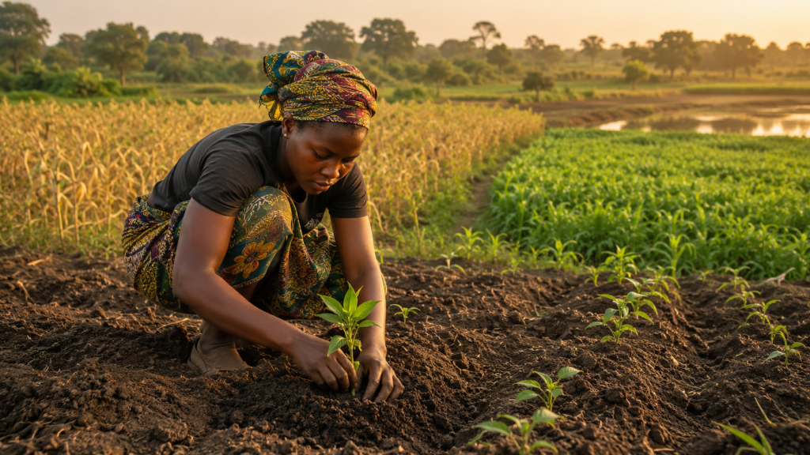

The rain is not going to become more reliable. The question is whether your farm is built to survive it the way it already is.

Fatima planted her maize in Plateau State in early May, right when the rains arrived. By mid-June, three weeks in, the rains stopped. The seedlings, planted at the wrong depth from seeds selected by habit rather than design, could not hold through a two-week dry gap. By the time the rains returned, the damage was done. The season was not lost because of the weather. It was lost in the decisions made before the first seed went into the ground.
Erratic rainfall is no longer an exception in Nigeria. It is the pattern. The farmers still waiting for the weather to return to what it used to be are the ones losing the most. The ones building resilience into the crop cycle before the season begins are the ones still standing at harvest.
Reality Check
A two-week dry gap during the critical vegetative stage of maize growth can reduce yields by up to 50 percent. That loss is largely preventable with the right variety selection, planting timing, and nursery preparation made weeks before the dry spell arrives.
Start at the Nursery, Not the Field
Most crop failures begin not in the field but in the nursery, or the absence of one. Seedlings raised from inferior genetic stock arrive in the field already weakened. When a dry spell comes, they have no reserve to draw on.
Seedlings raised in controlled environments with consistent moisture develop deeper root systems before transplanting. Those deeper roots are what keep a crop alive through a two-week rainfall gap. A proper nursery setup is not a luxury. It is insurance against the weather Nigeria actually delivers.
Match the Crop to the Conditions
Most Nigerian farmers plant by calendar and tradition. The same crop, the same time, every year. Climate-resilient farming matches the crop to the specific rainfall window and topography of the plot instead.
Early-maturing maize varieties complete their critical growth stages before the mid-season dry window arrives. Deep-rooting cassava draws moisture from well below the surface and continues growing through dry gaps that would finish a shallow-rooted crop entirely. In flood-prone lowland areas, flood-tolerant rice varieties turn excess water into a productive growing condition rather than a disaster. The crop is not just what you are growing. It is the first decision in your risk management strategy for the season.
Build a Small Buffer Before You Need It
A simple earthen catchment or farm pond positioned to collect runoff during heavy rains holds enough water to bridge a two-week dry gap on a one to two hectare plot. The catchment does not replace rain. It buys time. In a Nigerian growing season where the difference between a good harvest and a failed one is often measured in days, two weeks of buffer is the most valuable investment on the farm.
Reality Check
Climate resilience is not about predicting the weather. It is about building a farm that does not need to. The right seed variety, a strong nursery, and a small water buffer do not make dry spells disappear. They make them survivable.
Fatima’s next season does not have to look like her last one. The rain will still be unpredictable. The dry gaps will still come. But the decisions she makes before the first seed goes into the ground will determine whether those gaps cost her the harvest or barely slow it down.
The weather is not the variable she can control. Everything else is.